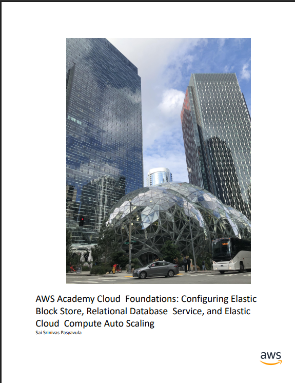
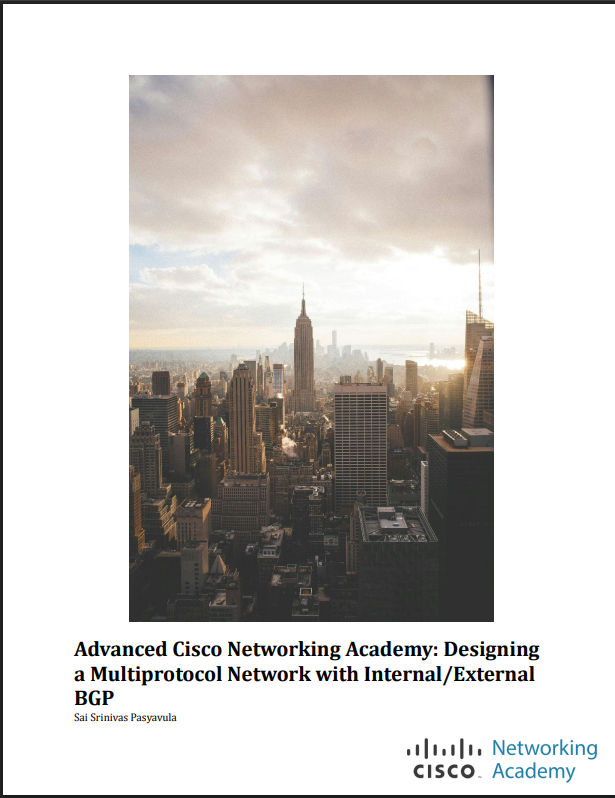
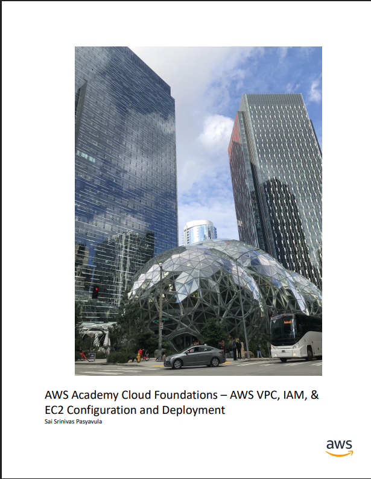
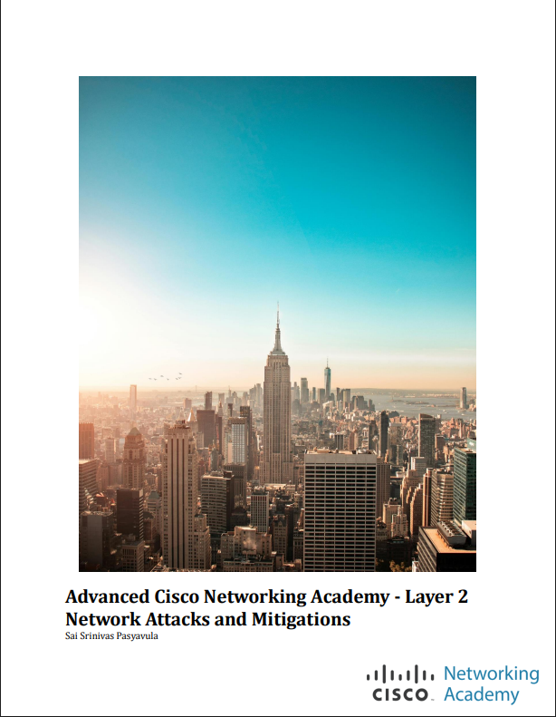
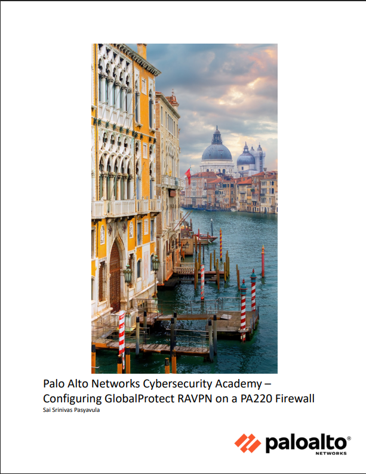
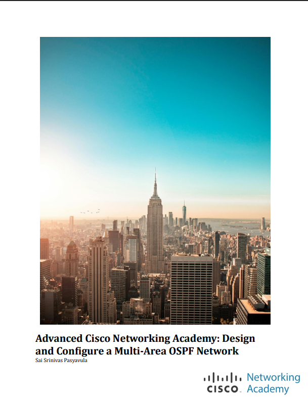
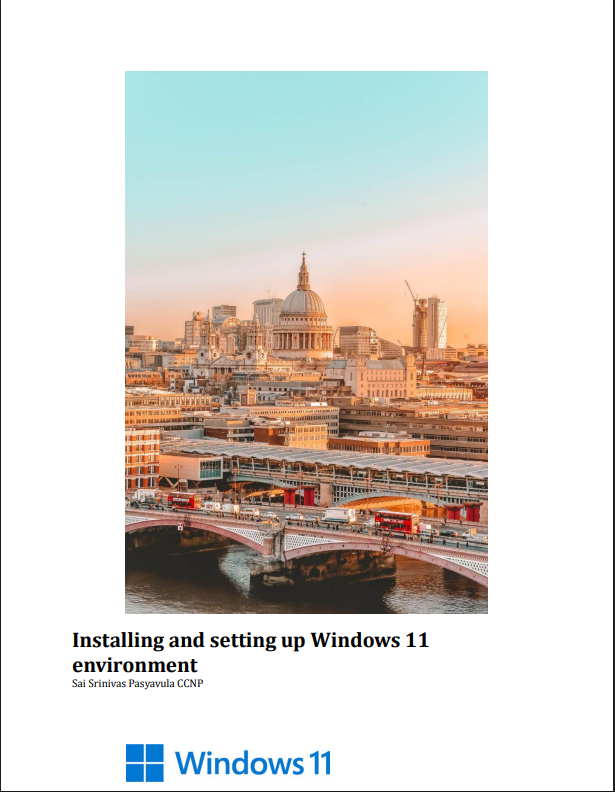
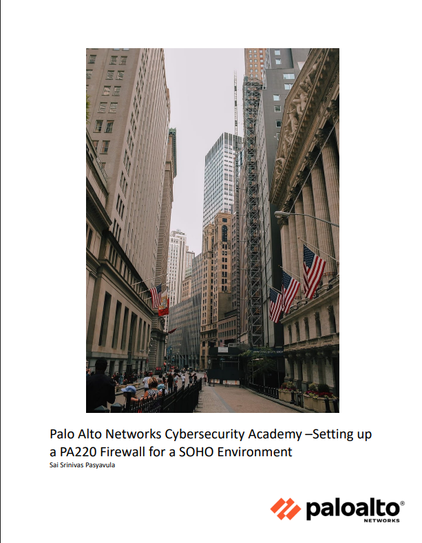
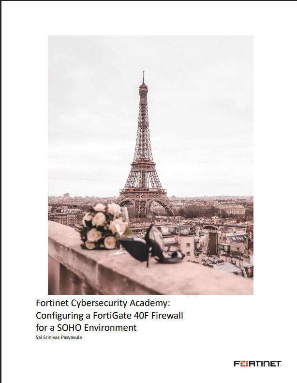

Labs & Write-Ups
Networking, Cybersecurity, Cloud, and Infrastructure Labs
Local AI
The purpose of this lab is to download and run an AI locally on your personal machine and then get it up onto the network.

AWS EBS, RDS, EC2 Auto scaling config
documents the last three labs in the AWS Cloud Foundations course. These labs go more in depth about cloud computing and explores the concepts of blocklevel file storage for servers, relational databases and automatic scaling to meet demand

BGP
I configured 3 remote autonomous systems, one running OSPF, one running EIGRP, and the other runner ISIS to be connected via BGP.

Paloalto Firewall Factory Reset
This lab teaches users how to manage, and factory rest a Palo Alto 220 firewall. It also teaches users how to get into the firewall web Gui for further management.

AWS VPC, IAM, EC2 config
documents the first three labs in the AWS Academy Cloud Foundations Course. The labs are ton configure Amazon IAM, VPC and a EC2 instance.

Layer 2 Attacks and Mitigations
I set up three different attacks and create three mitigations for those attacks. This lab goes through the processes of setting up a mac-flooding attack, Arpspoofing attack, and a VLAN hopping attack.

Configuring GlobalProtect RAVPN on a PA220 Firewall
I configured Microsofts remote desktop protocol (RDP) on two Windows computers: one on the PA220s internal network and one just outside the PA220s network. I then set up Palo Altos GlobalProtect remote access VPN on the firewall, including credentials for the outside user and a portal page to download the GlobalProtect client.

Configuring a FortAP With WPA2-PSK and WPA2- Enterprise Local Auth
In this lab, I set up the FortiAP 42E with a Fortigate Firewall with two WLANs, running WPA2- Personal with PSK and WPA2-Enterprise with Local authentication.

Design and Configure a Multi-Area OSPF Network
In this lab, I set up a multi-area OSPF network with three areas and seven total network devices.

Installing and setting up Windows 11 environment
This lab documents the process of setting up a NVM drive with Windows 11 and preparing it for future use in Cisco Classroom Settings.

Setting up a PA220 Firewall for a SOHO Environment
I set up a pa-220 firewall for a small scale Small Office/Home Office network.

Configuring a FortiGate 40F Firewall for a SOHO Environment
This lab documents the configuration of the SOHO environemnet on a FortiGate 40F firewall.
Setting up Web URL filtering on a PA220 firewall
The purpose of this lab is to set up filtering of Websites and software on a PA220 firewall for an elementary school. In this lab, we set up three two types of web filtering: URL filtering and a URL admin override.

Lab Title Placeholder
Brief description of the lab write-up goes here.